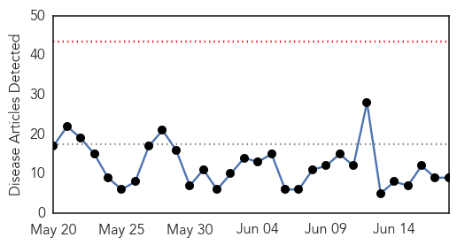
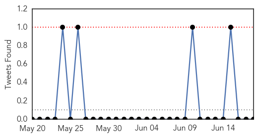
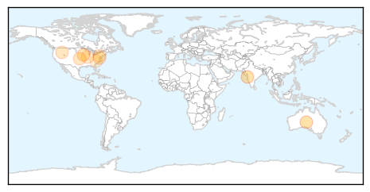
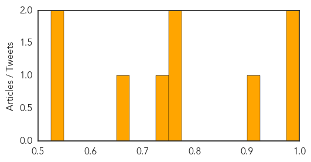

Toggle navigation
Early Warning
Daily Alerts
Influenza
Jun 18, 2015
Compare to:
-
Dengue Fever
Hemmorhagic Fever
Mold/Fungal Infection
Meningitis
Pertussis / Whooping Cough
Middle East Respiratory Syndrome
Cholera
Hepatitis
Chikungunya
Yellow Fever
Bubonic Plague
West Nile Virus
Swine Flu
Ebola
Measles
Unknown
Mumps
30 Day Trends
Web: 0
alerts
, 0
warnings
Twitter: 0
alerts
, 0
warnings
Top Articles:
0.999
Swine flu is no more a seasonal disease: Docs
0.999
Flu season brings a choice: vaccine or body’s defences?
0.902
Avian flu affects poultry farmers and consumers
0.751
June 18, 2015 Archives
0.751
June 17, 2015 Archives
0.741
The truth about bats and rabies in the Southwest
0.657
County fairs warned: Beware poultry, livestock diseases
0.536
Poultry virus is a showstopper
0.533
State department bans fowl from fairs amidst bird flu scare
Top Tweets:
No tweets found for Jun 18, 2015
Web/News Articles

Tweets

Article Locations

Article Confidences
